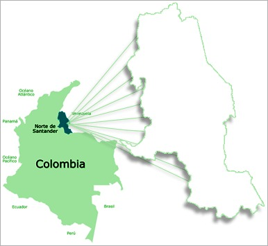

NORTE DE SANTANDER
Región:
Nororiental de la República de Colombia, sobre la codillera oriental
Playa de Belén
Cúcuta
Ocaña
Villa del Rosario
La Playa de Belén es un municipio en la subregión de occidente del departamento de Norte de Santander, Colombia. De sus lugares turisticos más concurridos se encuntra "El área natural única Los Estoraques"
CÚCUTA:Cúcuta es una ciudad colombiana en la frontera con Venezuela, conocida por su historia militar. En Cúcuta de sus lugares turisticos más visitados "El edificio de la Torre del Reloj"
OCAÑA:Ocaña es un municipio colombiano ubicado en el departamento de Norte de Santander. Con zonas turisticas como lo son "La Catedral de Santa Ana"
VILLA DEL ROSARIO:Villa del Rosario es un área metropolitana de Cúcuta de Norte de Santander. Con zonas turisticas como lo son "El Templo Historico"